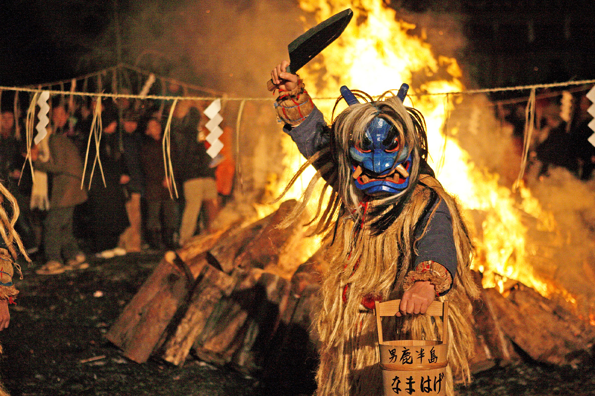
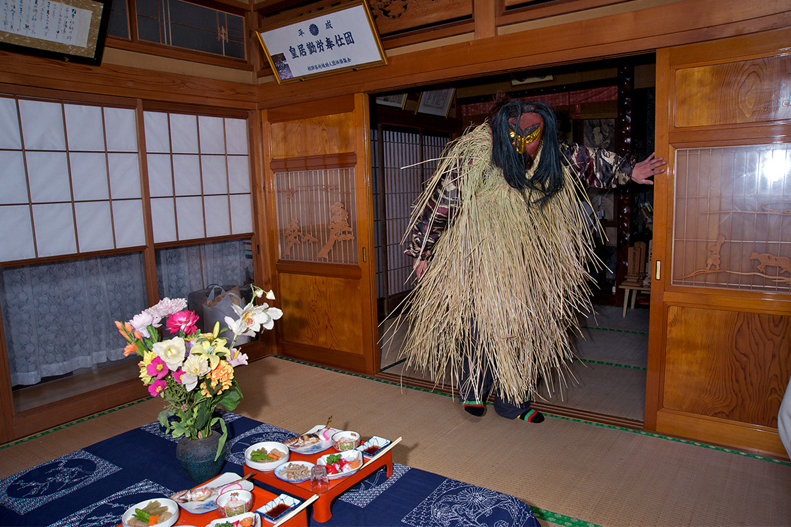
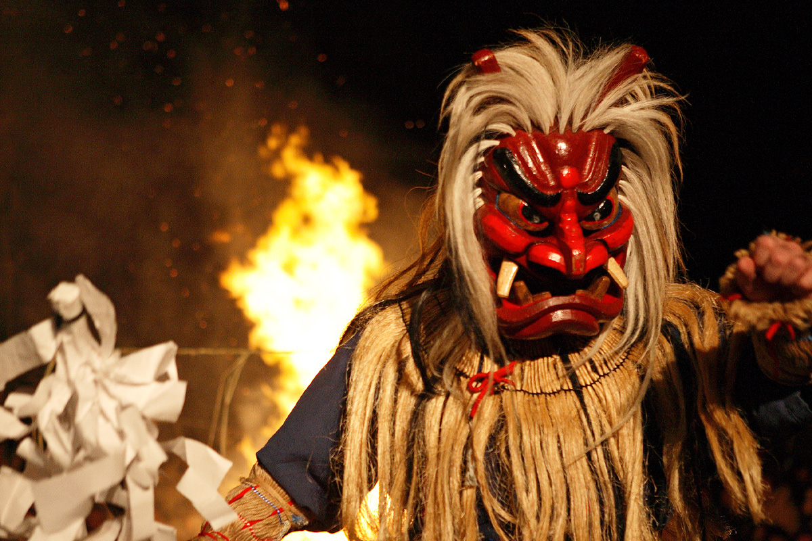
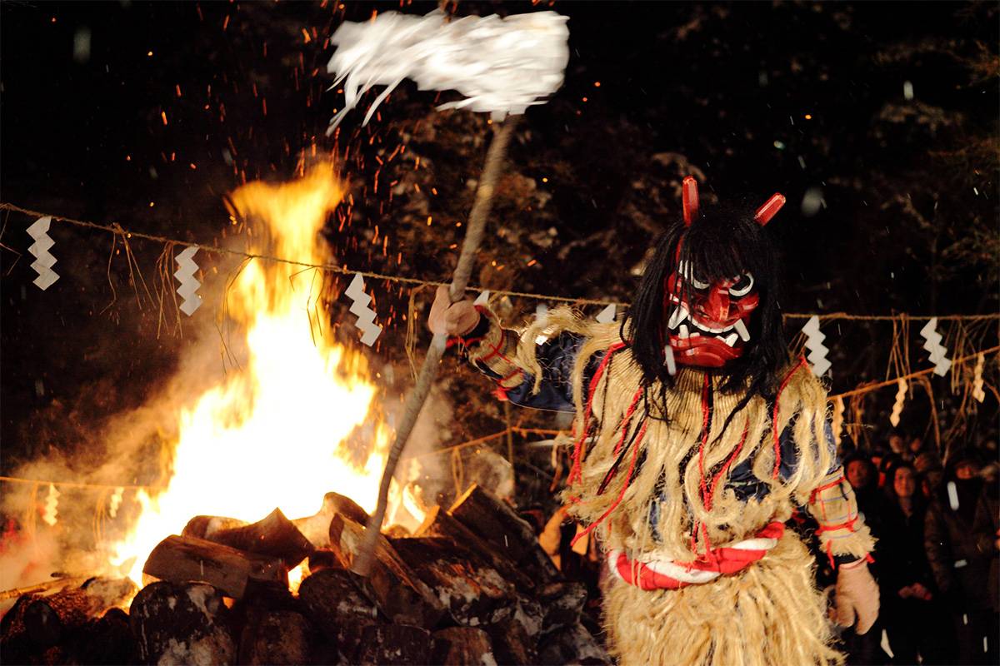
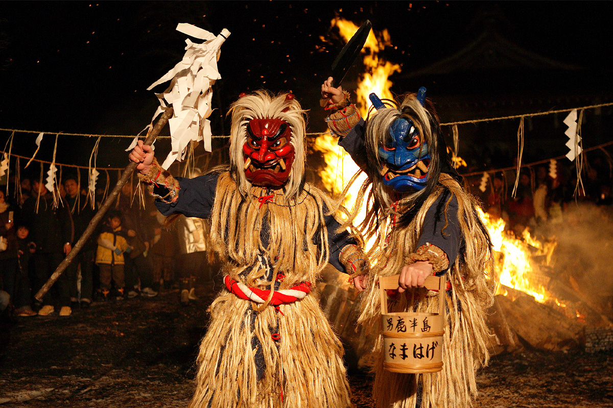
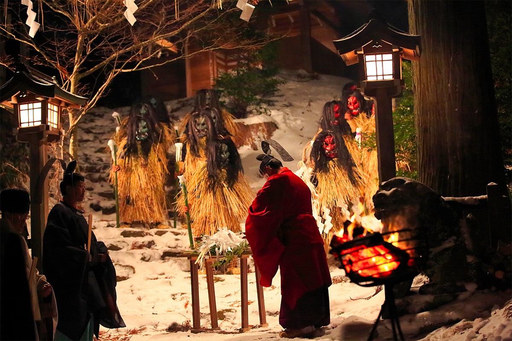
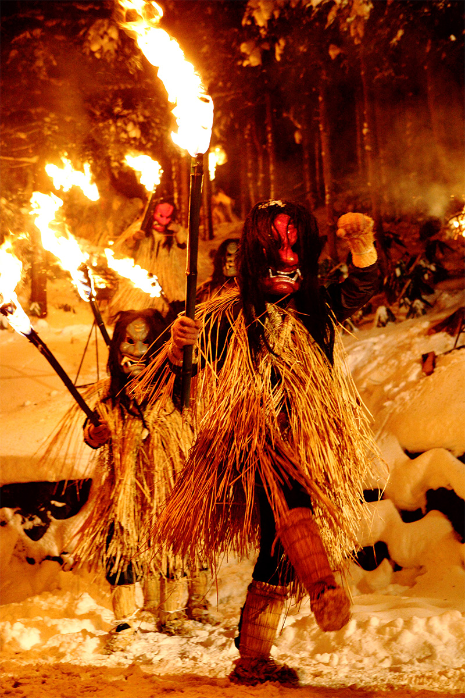
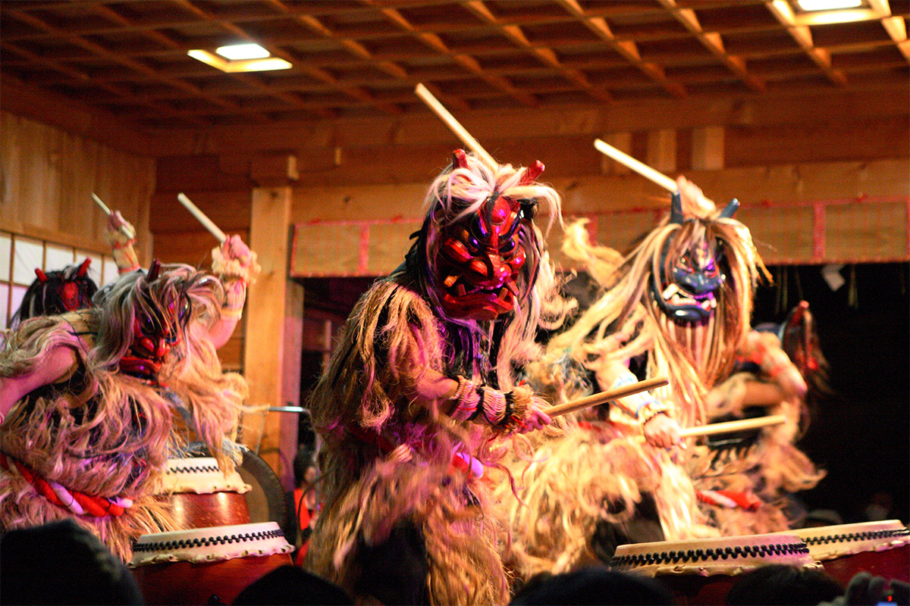

Префектура Акита · Ога · праздник
«Намахагэ сэдо мацури»: зимняя ночь, когда с гор Оги спускаются то ли боги, то ли демоны

Намахагэ знает каждый японец: ряженые в страшных масках, которые врываются в дом с криком «Есть тут плаксы?!». На полуострове Ога в префектуре Акита этот старинный обычай живёт до сих пор, а каждый февраль он превращается в ночной праздник у горного святилища.
Обычай
Гости в соломенных накидках
Праздники в Японии издавна связаны с жизнью людей и отражают характер своей местности. На многие из них могут прийти и путешественники, и тогда поездка становится не просто осмотром: вместе с местными жителями видишь то же, что и они, и заодно узнаёшь кое-что об истории и культуре страны. «Намахагэ сэдо мацури» в городе Ога как раз из таких.

В последний вечер года по деревням полуострова Ога ходят от дома к дому люди в масках, похожих на морды демонов. Их легко узнать по накидкам из соломы. Обряд «Намахагэ полуострова Ога» в 1978 году признали важным нематериальным народным культурным достоянием Японии, и это одна из главных зимних традиций всей префектуры Акита, а не только полуострова.
Происхождение
Пришельцы из другого мира

Обычай намахагэ считают частью народных верований, но о его корнях есть несколько версий. По одной из них, на полуостров однажды прибыл У-ди (156–87 до н. э.), император китайской династии Западная Хань, известный множеством военных походов. Пять летучих мышей, которые его сопровождали, будто бы и стали демонами-намахагэ.
По другой версии, началом послужили иностранцы, которых выбросило на берег Оги после кораблекрушения. Из-за крупных черт лица, большого роста и непонятной речи спасшихся с разбитых кораблей чужеземцев принимали не за людей, а за посланников богов или за чудовищ: такие легенды есть по всей Японии.
Третья версия связывает намахагэ с ямабуси, горными отшельниками, которые проходили суровую аскезу в горах полуострова. Скорее всего, верна не какая-то одна из версий: несколько прообразов наложились друг на друга, и из них вырос тот облик намахагэ, что дошёл до наших дней.
Смысл
Гроза лентяев и податель благ

Обычно намахагэ представляют пугалом для детей, но ищут они вовсе не только детей. Их добыча это лентяй, который часами сидит у очага и не встаёт на работу, отчего на руках и ногах у него проступают красные пятна. Такие пятна называют «намоми», и «содрать намоми» по-местному звучит как «намоми хаги». Отсюда, как считается, и пошло слово «намахагэ».
Но намахагэ не только наказывают лентяев. Это боги-гости, которые приносят в дом богатый урожай, здоровье и защиту от болезней. Их боятся как демонов и почитают как богов одновременно.

Когда появился этот обряд, точно не известно. Его проводят во многих деревнях Оги, и в каждой свои маски, свои костюмы и свой порядок. Раньше намахагэ приходили на малый Новый год, в середине января, а позже обряд перенесли на канун Нового года. Чтобы его могли увидеть и приезжие, в городе устроили снежный фестиваль. Он несколько раз менялся и в конце концов соединился со старинным обрядом «Сэдо мацури» святилища Синдзан. Так появился нынешний «Намахагэ сэдо мацури».
Праздник
Огонь, танцы и рисовые лепёшки

Обряд «Сэдо мацури» проводят в святилище Синдзан каждый год 3 января уже больше 900 лет: на территории разжигают священный костёр и исполняют ритуальные танцы кагура. На празднике к этому добавляются намахагэ. Сначала молодые люди получают маски в обряде «намахагэ нюкон». Потом в отблесках огня идёт «намахагэ одори», лихой танец намахагэ. А затем намахагэ с факелами спускаются с гор и обходят территорию святилища: это «намахагэ гэдзан».

Кульминацией праздника становятся «намахагэ гэдзан» и «кэмпэй». Из тёмных снежных гор намахагэ с факелами спускаются к зрителям и проходят по территории святилища. Следом идёт кэмпэй: намахагэ, посланникам бога, подносят предназначенную богу большую рисовую лепёшку, испечённую на священном костре. В такой лепёшке заключена божественная сила, и намахагэ не могут сразу до неё дотронуться. Получив её наконец, они уходят обратно к богам.
Днём
Музеи намахагэ

Праздник начинается вечером, так что днём стоит заглянуть в музей «Намахагэ-кан» и в «Ога Синдзан дэнсёкан». Там можно увидеть намахагэ не такими, какими их сделал праздник, а такими, какими они издавна оставались в деревенском обряде, и сравнить самые разные маски и костюмы из разных уголков полуострова.
«Намахагэ сэдо мацури»
- Даты
- ежегодно пятница, суббота и воскресенье, на которые приходится вторая суббота февраля (в 2026 году 13–15 февраля, в 2027 году 12–14 февраля)
- Адрес
- префектура Акита, Ога, Китаура-Синдзан, Мидзукуйдзава, 97 (святилище Синдзан)
- Телефон
- +81 185-24-9220 (оргкомитет праздника)
- Сайт
- oganavi.com/sedo